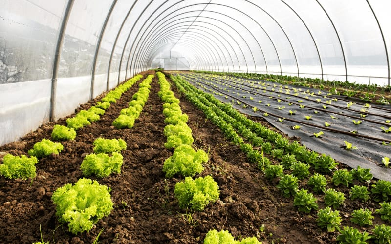

Projetos Realizados
Conheça alguns dos nossos projetos que já estão fazendo a diferença em comunidades e propriedades rurais.
 Educação
Educação
Biodigestor em Zona Rural
Instalação de Biodigestor BioPower em zona rural para fornecer biogás para uma familia composta por 8 pessoas e biofertilizante para a horta que a familia possui, reduzindo custos com gás de cozinha e carvão vegetal em 70%.
 Agroindústria
Agroindústria
Sistema de Biogás para Granja
Projeto de aproveitamento de resíduos avícolas para geração de energia e produção de biofertilizante em granja de médio porte com 5.000 aves, gerando economia de 40% nos custos energéticos.

AgriculturaEstufa Agrícola com Biogás
Implementação de sistema de aquecimento para estufa agrícola utilizando biogás, permitindo produção durante todo o ano e aumentando a produtividade em 60% para uma cooperativa de 25 famílias.